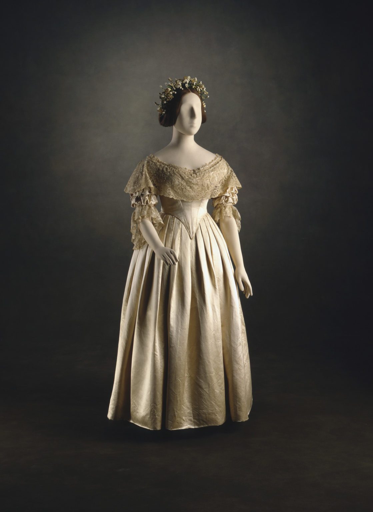

Lab 04
Victorian Fashion

JPG File
This is Queen Victoria’s wedding dress, which she wore in 1840 to be wed to Prince Albert. Their wedding was both a public event as well as a celebration of their union. The British public was dissatisfied with the monarchy, and the wedding was largely a public spectacle to improve their image. I chose this dress because it’s an excellent example of fashion as soft power and propaganda. Queen Victoria very deliberately chose a white gown , which was an uncommon color for royalty at the time. At the same time that it displayed her wealth, it was also a patriotic symbol, as the lace for it was commissioned especially from British dressmakers, and a symbol of her purity. To this day, white is still the defacto color for brides in the west, due to her trendsetting.